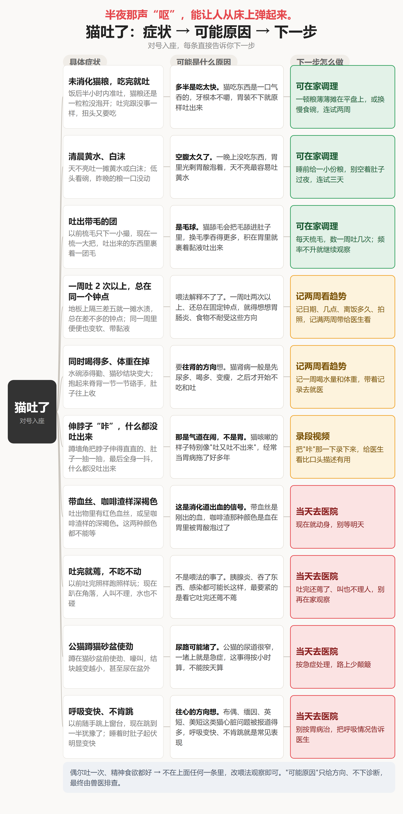
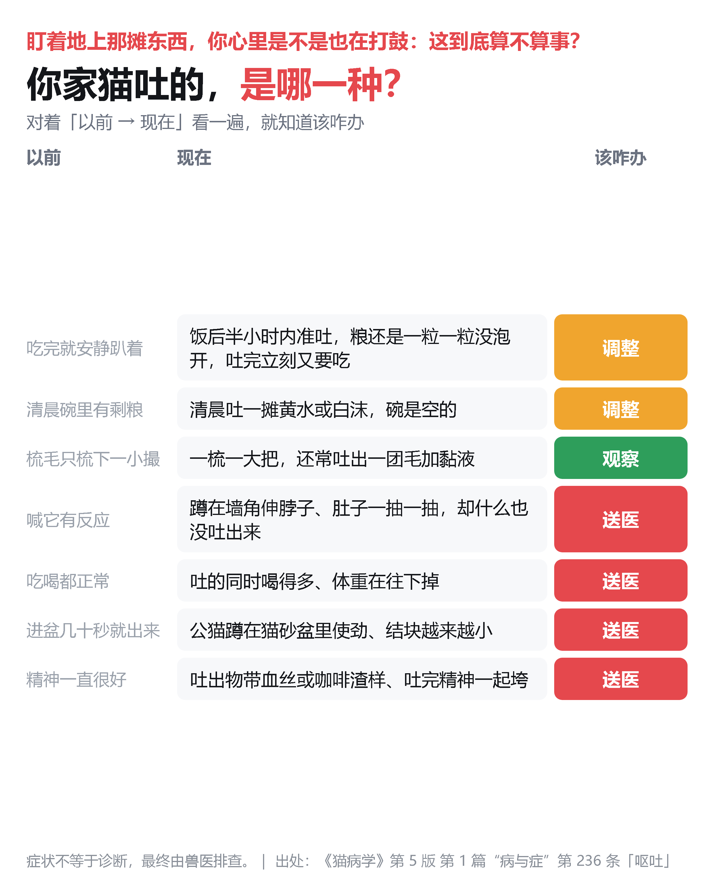
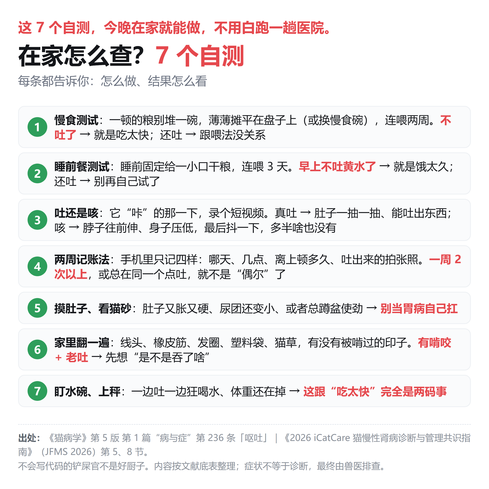
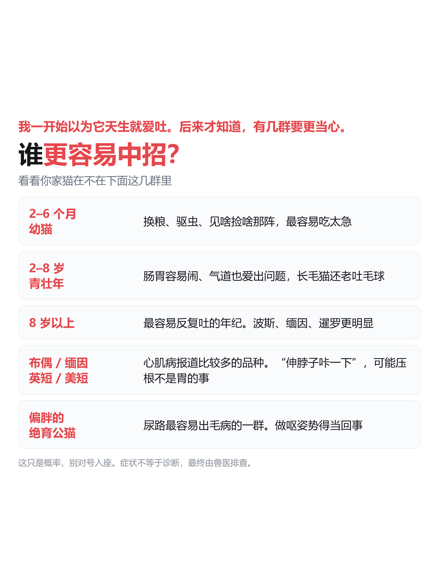
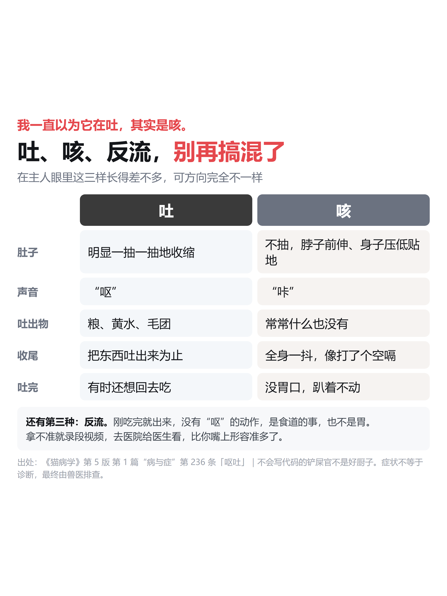
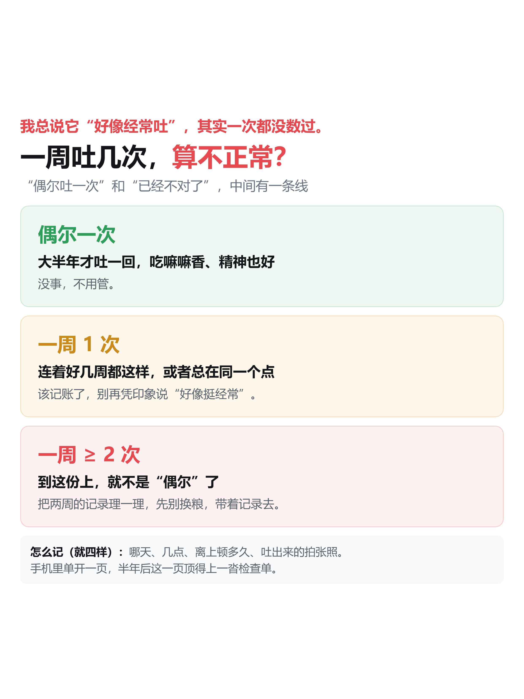
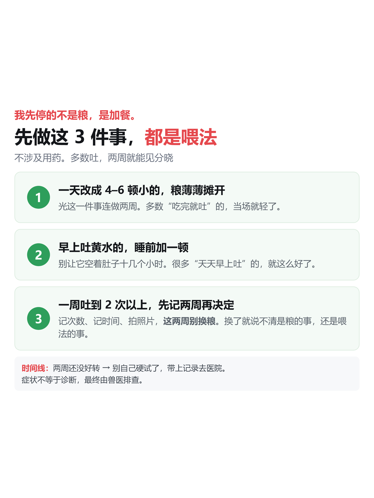
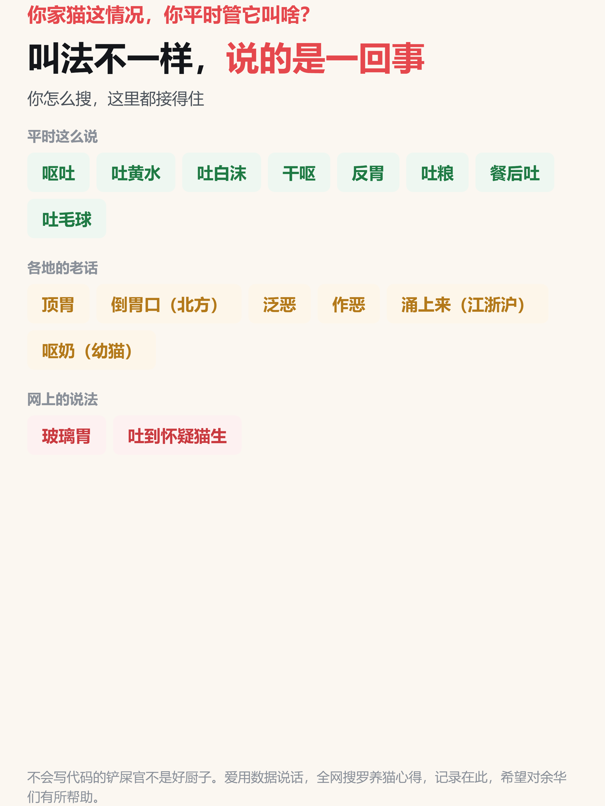
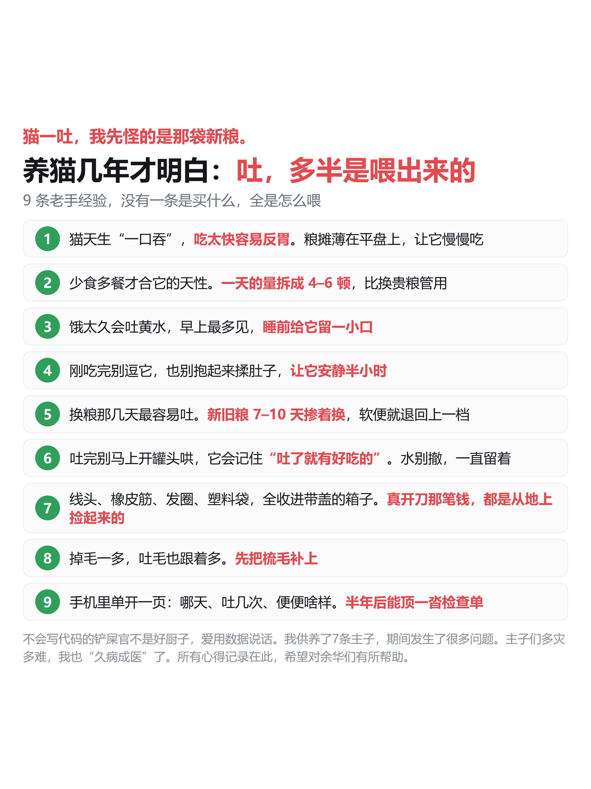

第一期 = 判断（3 图）｜第二期 = 怎么办（6 图）
图可左右滑动；下面是该期的发布文案



早上起来，地板上又是一摊。我第一反应也是"完了"：是不是喂错了？要不要马上跑医院？
先别慌。猫吐这事，多数是喂法闹的；但真有那么几种，压根不是胃的事。
第一张图把情况分成 3 档：在家调、去排查、当天去，先看你家猫落在哪一档。
第二张对着"以前 → 现在"看一遍，就知道是再等等、改改喂法，还是赶紧去医院。
最后一张是 7 个在家就能做的自测，今晚就能试。






上一期讲了怎么判断，这一期讲怎么办。
第一张说谁更容易中招。不是哪种猫专属，但有几群要更留心。
第二张讲吐、咳、反流怎么分。好多猫的"咳"被当成胃病，拖了好几年。
第三张给一条线：一周吐几次算不正常，过了这条线就不是"偶尔"了。
第四张是这一步最该做的：改喂法，连做两周再看。
第五张收各种叫法，不管你怎么搜都接得住。
第六张是 9 条老手经验，没有一条是买什么，全是怎么喂。
一期/ 二期/，每张 PNG 旁边有同名 HTML 源，改完用 chrome headless 重截。01-吐了-定稿全文（两期）.md。